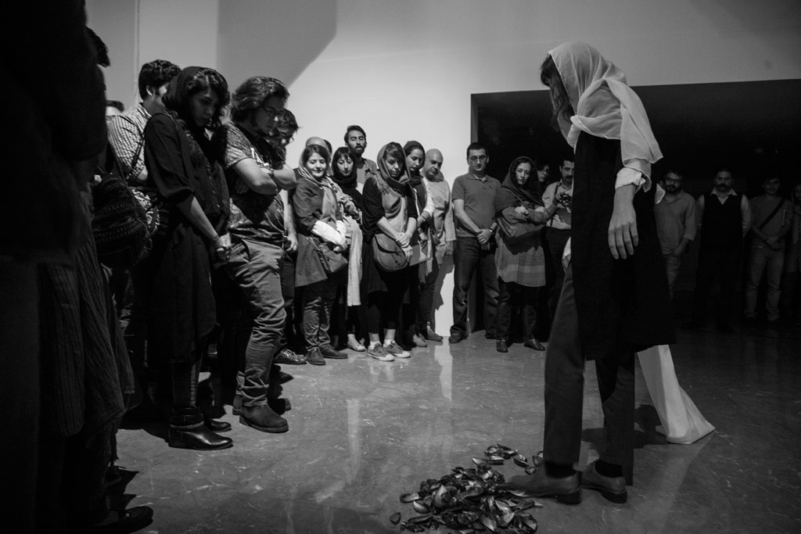
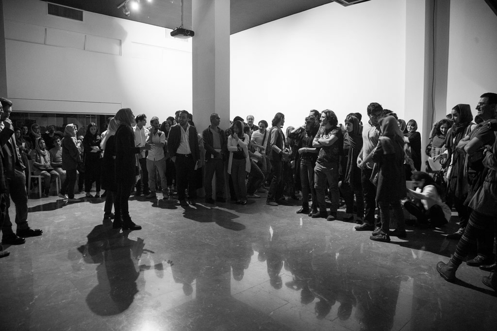
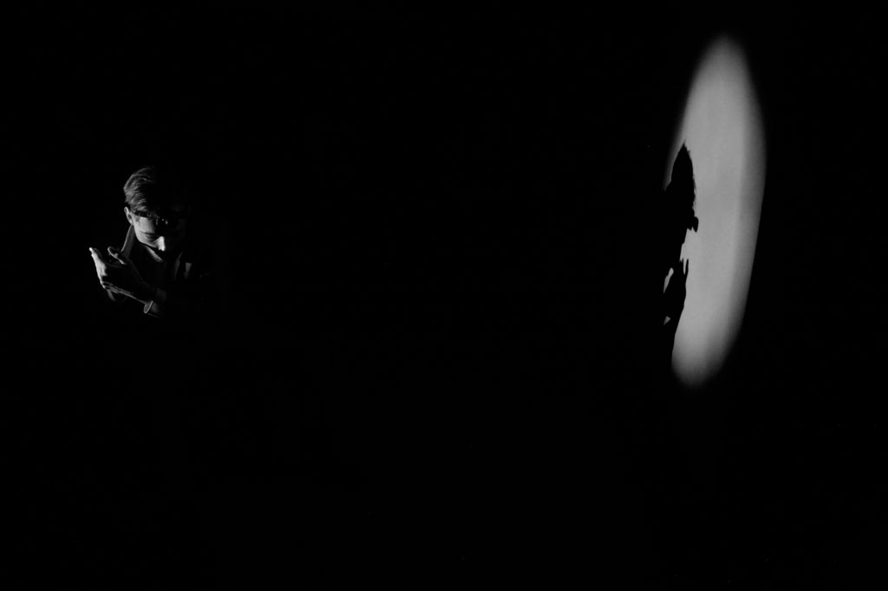
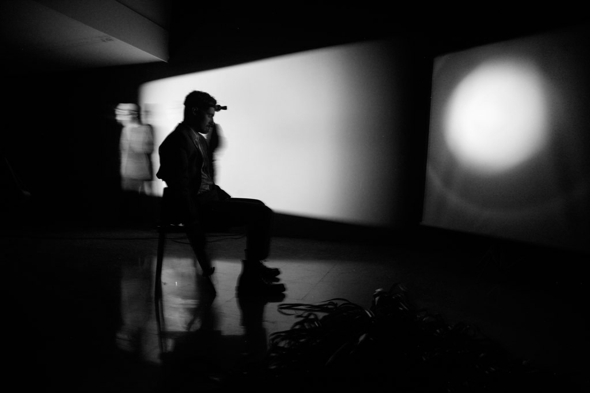
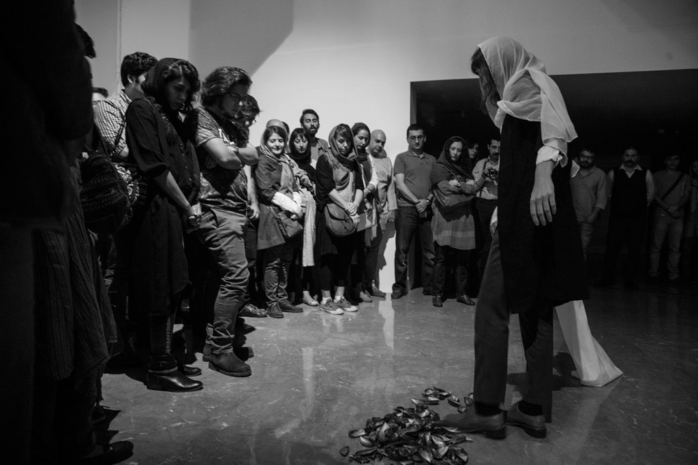
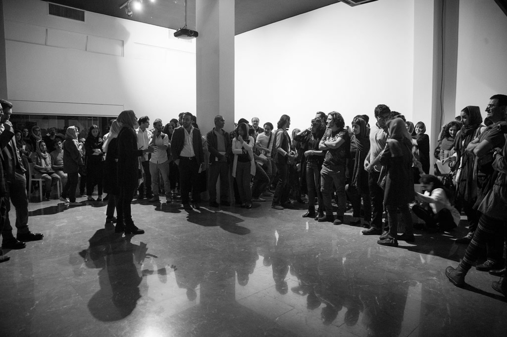
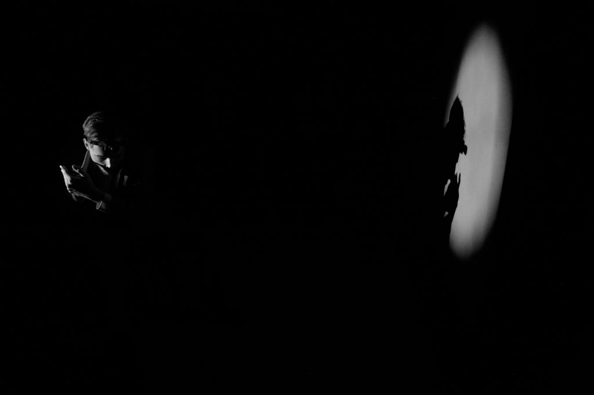
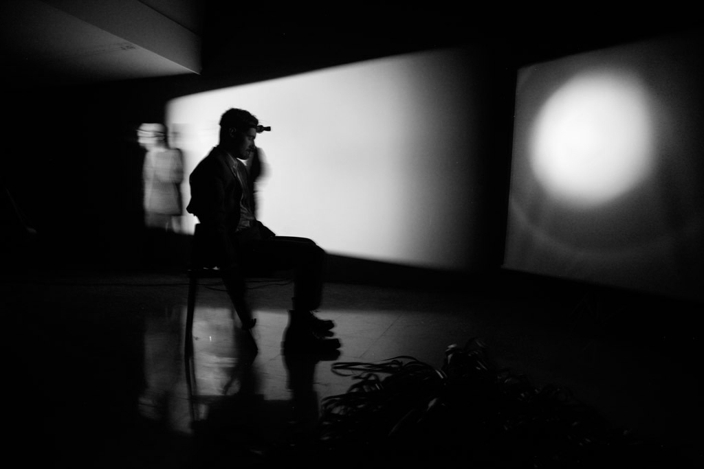

2015
Performance—environment
Hammer, buckets, water, cocktail shaker, mussel shells, leader, sacks, chair, film projector, sounds, portable screen
Conceived by Operation Rewrite (collaborative project with Maximilian Le Cain) and presented with Dean Kavanagh and Michael Higgins at Lajevardi Foundation, Teheran Iran
Operation Rewrite performances usually involved the artists, as ‘scientist’ figures, interacting with elaborate film projections (Super8 and 16mm), pre-recorded and live sounds, as well as objects arranged to form mutant installations. Cut-up film noir narratives may coexist with a materialist investigation of both the artist’s body and the body of cinema. The latter is considered from an ‘amplique’ or expanded view after the achievements of Lettrism. The medium of film becomes an object, malleable and fragile, edible, destructible, and capable of measuring space and time. Projected light and its magnetic field of intermittency may bleed through a sewing machine illuminated against a corporeal screen and penetrate a blindfold.
All of these actions and others, framed by a series of subtle and straightforward interruptions, make Operation Rewrite performances disturbing and humorous in equal parts. They typically feature such objects and events as 16mm and Super8 film projections, darkroom compositions, choreographed actions, diegetic sounds, tape recordings, feathers, eggs, tools, an oval mirror, a gas mask, fake blood, a pipe, a brown folder, a filmstrip, buckets of liquid, an empty cloak, an ironing board, shoulder massage, a spooky television, a bloody X, a variety of other Xs, red light, a phone conversation, a cocktail shaker, a sewing machine, light bleed, palm trees, tennis equipment, robot costumes, printed letters... A few of our performances featured Irish theatre writer, director and performer John McCarthy, a lead performer in many of Le Cain’s films.
Photographs: New Media Society (Teheran)